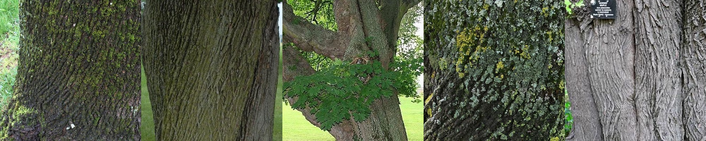
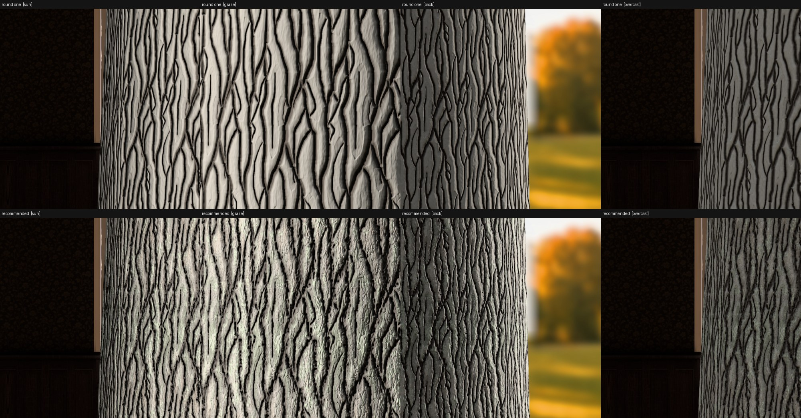
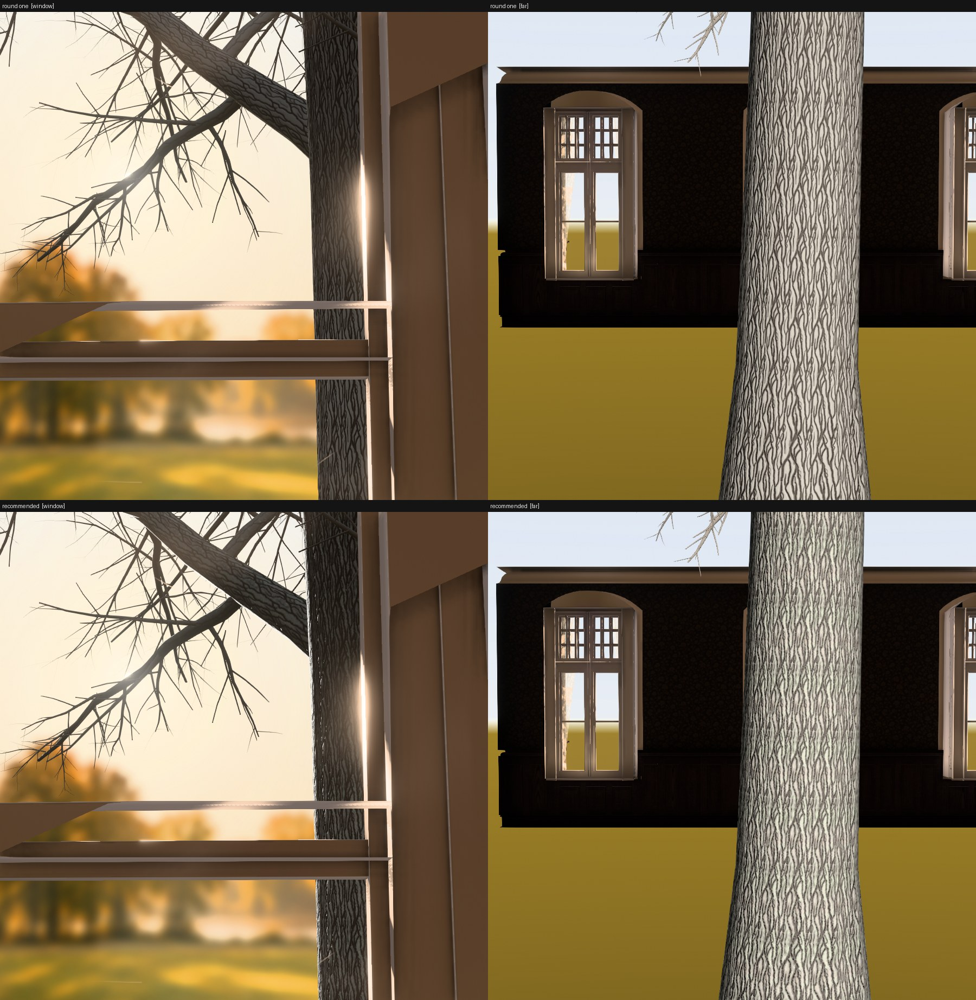
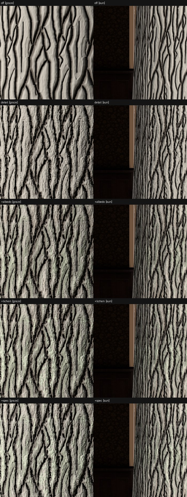
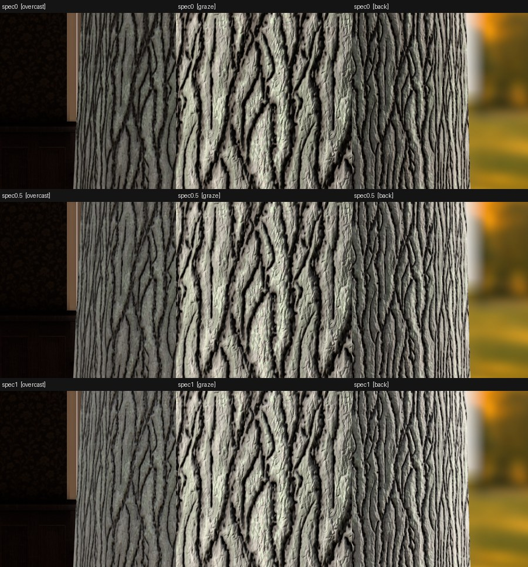
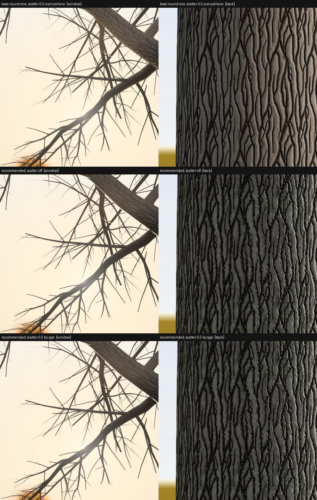
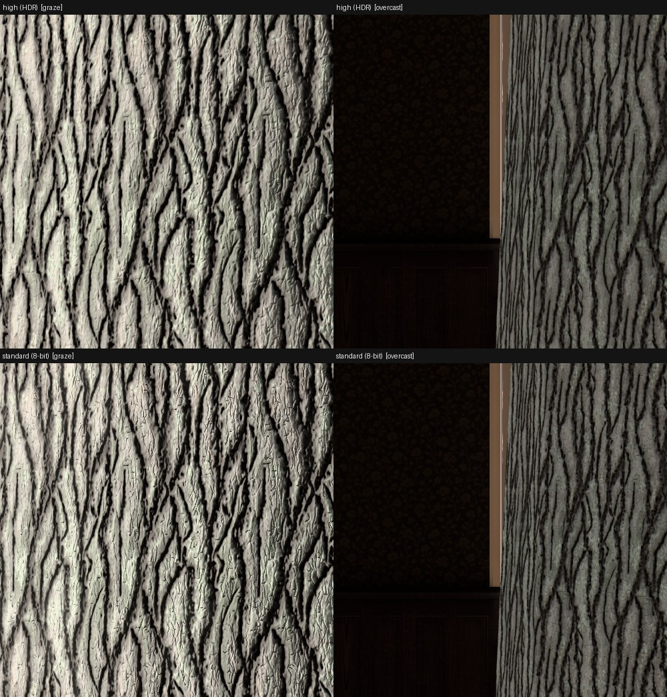

You said the bark still looks a little like plastic. I checked the shader against your material spec (build/notes/bark-roots/norway_maple_bark_material.txt). The spec ranks the parts in this order: geometry and normals first, then albedo and roughness, and scattering last, barely there on old bark. Each change is a switch in the light tuner, off by default. Built and checked on the Windows PC (RTX 4090) only.
Recommended: --tree-bark on --tree-detail 1 --tree-albedo 1 --tree-lichen 1 --tree-spec 1, with scattering left off (--tree-scatter 0).

build/notes/bark-roots/). The plates are corky and broken, and their edges are ragged. The colour is grey-brown with green algae, moss and pale lichen. Nothing shines.Same camera and exposure in each pair. The room's low sun stays where it is and the camera moves round the trunk: the sun behind the eye, the sun grazing from the side, against the sun, and overcast (no sun, more sky: --tree-light 0,1.8). All close, from about 2.5 m.


From the window, the limbs gain the most: their plates now break up. On the trunk, seen against the light, the change is small.

| Switch | What it does | Verdict |
|---|---|---|
--tree-detail K | A third bark texture, made at startup, adds two things to the height. One is the cork's fine relief: small domes between the grooves of stretched cells, and fibres along the stem (a third as strong on young bark). The other is secondary cracks on grown bark: 1,400 short ones along the stem and 700 across the ridges' crowns, each ending at a furrow. The plates' edges are also made ragged by noise when the tile is made. | Helps most. This is the spec's first priority. |
--tree-albedo K | The ridges' colour drifts between a warm grey-brown and an olive grey. Sheltered plates are a fifth darker. The ridges' weathered tops and the cells' domes are lighter. The furrows stay as dark as before. | Helps a little. It also takes some chalkiness off the sunlit trunk. |
--tree-lichen K | Clustered grey-green patches of lichen on the ridges of grown bark, with a mask of their own. | Helps close up. |
--tree-spec K | A weak, broad highlight of the sun (GGX, F0 0.034, IOR 1.45). Its roughness follows the wood's age: 0.55 on shoots, 0.72 on young limbs, 0.9 on the old trunk. Cracks shadow it as they shadow the sun. | Subtle: a dry sheen on lit ridges in grazing light, not waxy. |
--tree-scatter W | Now follows age: the full W on shoots, less on young limbs, and none on wood over about 2 cm. | No gain, so it stays off (below). |

With the sky's reflection added on top, the median of the overcast trunk rose from 29 to 54 levels. The bark turned grey and hazy, and lost some contrast against the light. The albedo is matched to the photos, so it already holds that reflection. The kept lobe reflects the sun alone.


The standard tier's forward slopes draw the fine grooves as hard lines. Its fine relief is turned down to 0.6, but the small cracks still show there as thin hard lines. Phones take the screen's derivatives of the summed height. While a part's switch is 0, the shader skips its taps of the detail texture.
tools/tree_dump), so the detail adds about 22 ms. The ragged edges add 2.5 ms of that. This runs once, not in the frame loop.